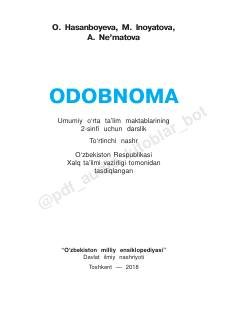

O22-sinf o'quvchilari uchun odob-axloq va vatanparvarlikka oid o'quv qo'llanma.
Ushbu darslik umumiy o'rta ta'lim maktablarining 2-sinf o'quvchilari uchun mo'ljallangan bo'lib, odob-axloq qoidalari va vatanparvarlik tuyg'ularini shakllantirishga qaratilgan. Kitobda buyuk ajdodlar merosi, Vatan tushunchasi va insoniy fazilatlar haqida qiziqarli ma'lumotlar hamda topshiriqlar keltirilgan.